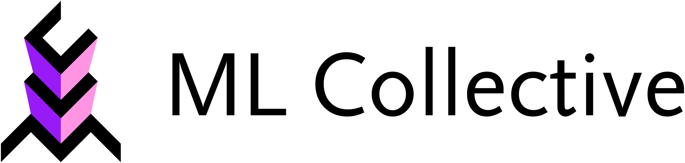
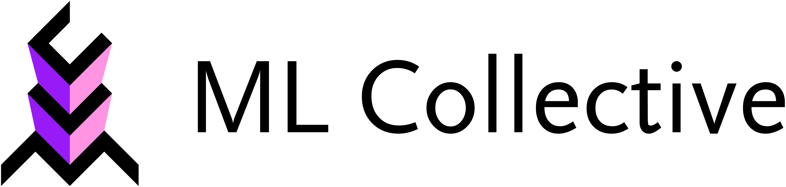

From Limited Contexts to Rich Data
Elevating Twi NLP through Diverse and Verified Datasets
1University of Education, Winneba  2ML Collective 
2ML Collective 
This study aims to create a scalable, high-quality Twi-English parallel corpus with wide domain coverage, an update mechanism, and a human-in-the-loop evaluation pipeline.
Introduction
The efficacy of LLMs like GPT largely depends on the quality and diversity of their training datasets. However, for languages such as Twi, there is a noticeable scarcity of high-quality, diverse datasets. Preliminary research showed that datasets are often derived from limited contexts, such as religious texts, which do not provide the breadth for developing robust language models.
This hinders representation in multilingual LLMs and the development of downstream tools for education, healthcare, and civic tech.
Our Contributions
Diverse Parallel Corpus
A large Twi-English corpus covering multiple domains, including literature, healthcare, social media, and news articles. This diverse dataset will enable more robust and contextually-aware language models for Twi.
A Continuous Update Framework
Unlike static datasets, our framework automatically replaces outdated translations when stronger models (e.g., DeepSeek) become available. This ensures the corpus remains current and improves over time with advances in translation technology.
Interactive Data Annotation & Evaluation Tool
An intuitive web and mobile interface enables expert reviewers to validate translations, suggest corrections, and track quality over time. This human-in-the-loop approach ensures high-quality data while maintaining scalability and efficiency.
Methods
Data Acquisition and Preprocessing
We source raw textual data from diverse domains, including literature, health, social media, and news articles. Texts are cleaned and aligned at the sentence level. To address domain imbalance, we supplement underrepresented categories with synthetically generated sentence pairs that simulate natural use cases.
Translation
Initial translations are generated using large language models (LLMs) such as NLLB-200 and Gemini 1.5, prompted with example-rich templates to improve fluency and contextual relevance. Google Translate will also be used to aid in the translation quality.
Expert Validation
Selected samples undergo final review via an interactive interface where linguists and fluent speakers evaluate translations based on clarity, correctness, and cultural fit.
Anticipated Results
- High-quality translations:
At least 80% of validated sentence pairs are expected to score above 4 out of 5 in human adequacy and fluency evaluations. - Improved translation performance:
Fine-tuned multilingual models are projected to achieve +3 to +6 BLEU improvement over JW300 on general-domain Twi-English tasks. - Domain balance:
The final dataset will span ≥5 distinct domains, with no more than 30% from any single category. - Expert agreement:
Human evaluation via our interface is expected to yield a Cohen's K≥0.75.
Impact and Application
The dataset will directly support the development of machine translation systems, voice assistants, and educational tools tailored to Twi speakers. In healthcare, it can improve patient-doctor communication through accurate translation of medical instructions and consent forms.
In governance, it can enable the delivery of public service announcements and legal information in a language that over 9 million Ghanaians understand. By grounding NLP systems in local linguistic realities, our work lays the foundation for inclusive AI in West Africa.
Conclusion
Our approach addresses key challenges in low-resource language development, namely, data scarcity, limited contextual diversity, and lack of verification pipelines. By integrating human expertise with automated translation and validation tools, we lay the groundwork for scalable, high-quality dataset creation.
BibTeX
@article{mireku2025,
author = {Mireku, Jackline and Mireku, Prince},
title = {From Limited Contexts to Rich Data: Elevating Twi NLP},
year = {2025},
}
Contact Info
For any questions, please contact us at mirekuprince66@gmail.com.